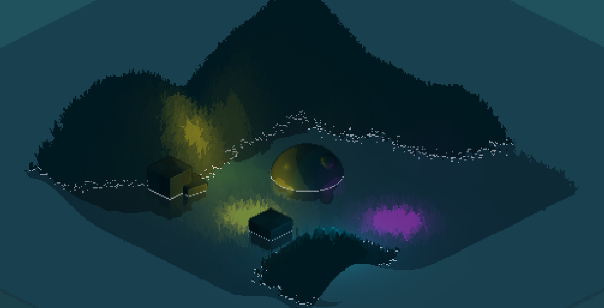
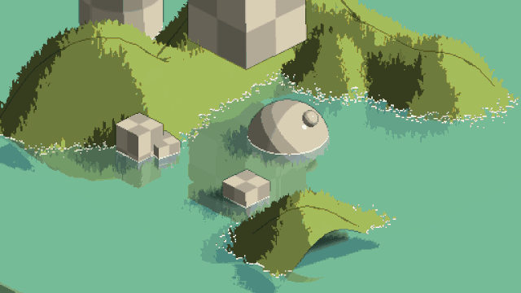

Unity Pixel Art Rendering
Skills used in this project
- Self Learning
- HLSL, Unity and Shadergraph
- Shaders
Summary
 A small project I created which attempted to replicate a 2D pixel art style using Unity's 3D renderer. It was primarily done to teach myself more about Unity's shadergraph.
To achieve the pixel appearance, the rendering camera is simply set to output a lower resolution. Screen-space Outlines and highlights were used to imitate the look of 2D sprites, the first are darker and generated from the camera's depth texture (which also has a reduced resolution). The highlights are generated from the camera's depth-normal texture and highlight edges facing towards the camera in a lighter colour.
 A simple cel shader with 3 colour bands is used to provide a cartoony look, additionally specular is are applied separately and isn't banded.
The grass is made of simple billboarded sprites, their colour is determined by sampling the pixel of terrain they're on and colouring their entire sprite with it, this maintains the original silhouette of each grass tuft.
A simple cel shader with 3 colour bands is used to provide a cartoony look, additionally specular is are applied separately and isn't banded.
The grass is made of simple billboarded sprites, their colour is determined by sampling the pixel of terrain they're on and colouring their entire sprite with it, this maintains the original silhouette of each grass tuft.
The cooler night time colour palette occurs if the directional lighting reads below a certain value. The water is a simple translucent shader which has its own foam outline for where it intersects with other objects also generated from the depth texture. Finally the water has planar reflections on its surface which are lightly distorted to provide the illusion of ripples.
This project was mostly inspired by this video from t3ssel8r and my goal was to replicate the style closely to challenge myself.